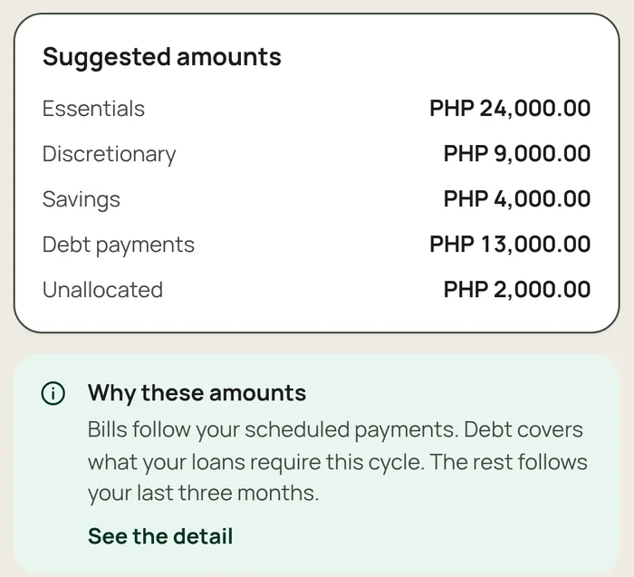
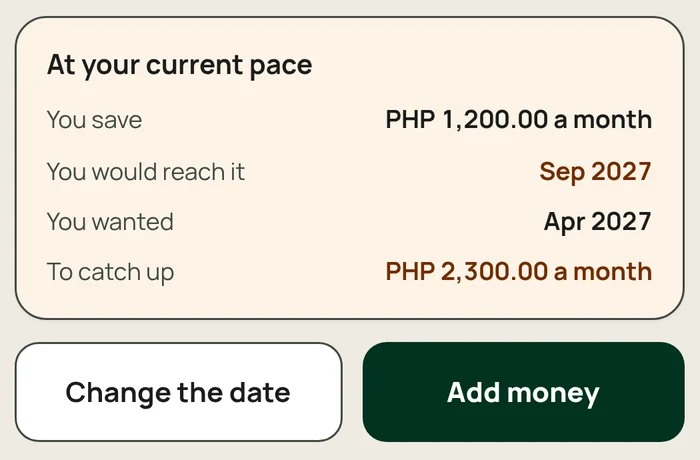
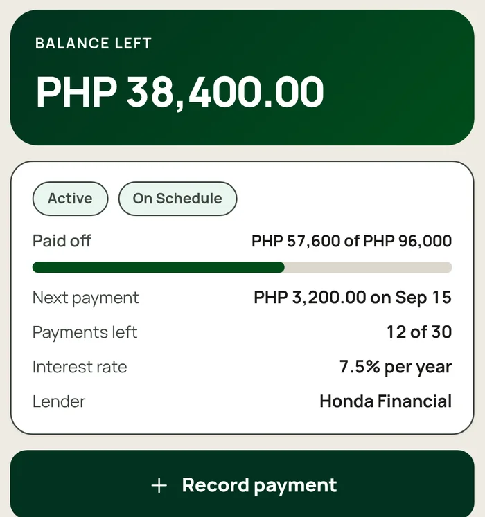
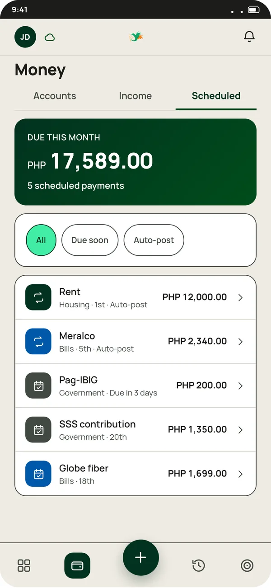
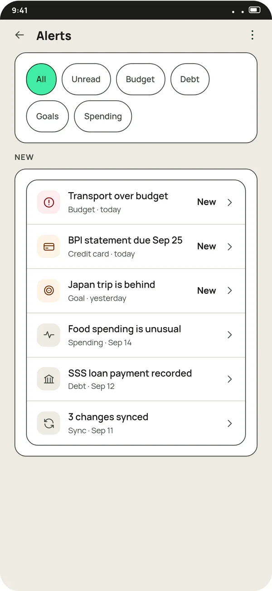

It sees December coming.
Budgie forecasts the months that cost more, like Christmas, enrollment and summer Meralco bills, and builds your budget, savings and debt plan before they arrive.
December Food +8.7%; Other goods & services +9.0% vs previous month. Based on actual data from the Philippine Statistics Authority’s Household Final Consumption Expenditure (HFCE) and Family Income and Expenditure Survey (FIES)
Most apps show you last month.
Budgie looks at next December.
These are projections from Budgie’s 12 trained Philippine household spending models for 2027. The dial and bars apply the national seasonal pattern to the 2025 average for a family of four. The percentage readouts compare each month with the previous month. Monthly values spread each quarter’s projected growth evenly across its three months. Your personal forecast combines national category trends with your own spending history.
Average Spending for a Filipino Family of 4
₱28,285per month
2025 FIES · ₱339,421 per year · Families of 4 only · Survey-weighted average
Illustrative monthly spending · 2027 seasonal pattern at the 2025 family-of-four average
December Illustrative spending: ₱32,577 · 5.7% higher than previous month Food +8.7%; Other goods & services +9.0% vs previous month.
Based on actual data from the Philippine Statistics Authority’s Household Final Consumption Expenditure (HFCE) and Family Income and Expenditure Survey (FIES).
HFCE data as of: 7 August 2026.
Monthly amounts use the 2027 national seasonal pattern, derived from quarterly growth and scaled to the 2025 average for a family of four.
Bars extend above or below the ₱28,285 average. Labels are in thousands of pesos. Percentage changes compare consecutive months.
One forecast.
Three plans that agree with each other.
The forecast feeds a monthly plan that covers everything your money has to do at once. Essentials and obligations come first, then what’s left is split between your goals and your debts.
Budgie suggests. You approve, edit, or say no thanks.
-
Budget
Sized for the season you’re in.
A June budget already makes room for enrollment. Bills follow your scheduled payments, debts get what your loans require, and Budgie shows you why.

-
Savings
A schedule you can actually keep.
How much to set aside each month for an emergency fund, tuition or a trip, when you’ll get there at your current pace, and what it takes to catch up.

-
Debt
A payoff with a date on it.
Loans and credit cards tracked to the payment, with what’s left, what’s next, and how many payments until you’re done.

Padala, Pag-IBIG and paluwagan aren’t edge cases here.
Budgie’s categories start from how money really moves in a Filipino household: family support and remittances, SSS, PhilHealth and Pag-IBIG contributions, billers like Meralco and Globe, and the cash, bank and e-wallet accounts you split it all across.
- Family support
- Planned for, not treated as overspending
- Government contributions
- SSS, PhilHealth and Pag-IBIG in their own category
- Billers and remittances
- Due dates in your plan, before they’re due
- Unusual spending
- Flags a category that’s well outside your normal range


We asked before we built.
From the Budgie research team’s survey of Filipinos who manage their own money:
89.4%
feel existing budgeting apps don’t account for their family obligations, which 97.9% of them have to plan around.
| 97.9% | would use their spending data to predict what they’ll need next |
|---|---|
| 85.1% | find it hard to keep track of their spending consistently |
| 72.3% | say unexpected expenses are a source of stress |
| 66.0% | often can’t tell where their money went |
Source: Budgie research team survey (thesis, University of Makati). Nationally, 77% of Filipino adults find it somewhat or very difficult to raise money for an emergency (BSP, 2026).
The fine print, in large print.
-
Android first
Budgie is being built for Android phones.
-
You enter, it plans
No bank or e-wallet linking. You log transactions yourself, and that’s what keeps your data in your hands.
-
Works offline
Record spending without signal. It syncs when you’re back online.
-
Forecasts need a little history
Forecasts and unusual-spending alerts start once you’ve logged enough to learn from.
-
Advice, not orders
Budgie is decision support, not licensed financial advice. Every plan waits for your approval.
Get ready for this December, early.
Budgie is in development for Android. Early access isn’t open yet; when it is, this is where you’ll find it.
Not open yet. Check back here.